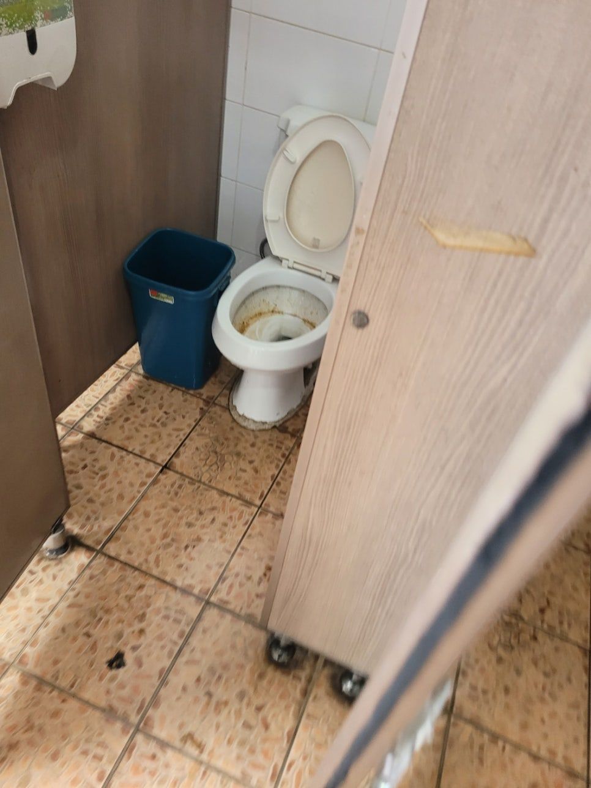
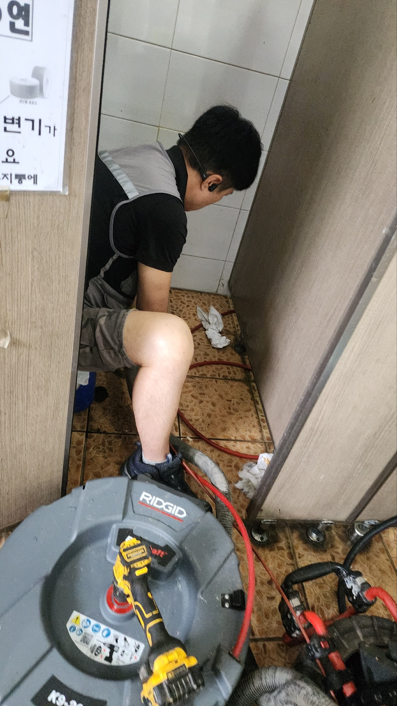
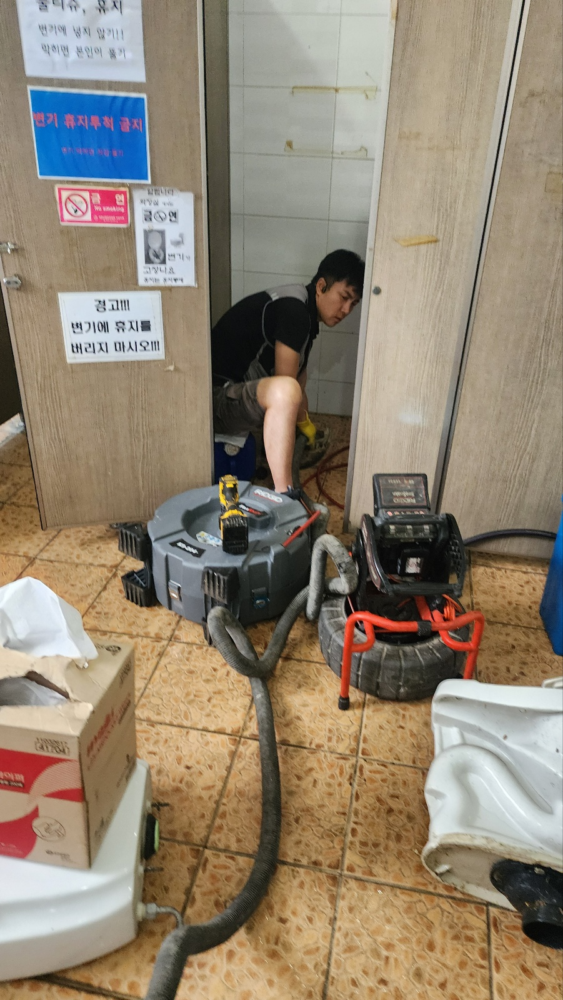
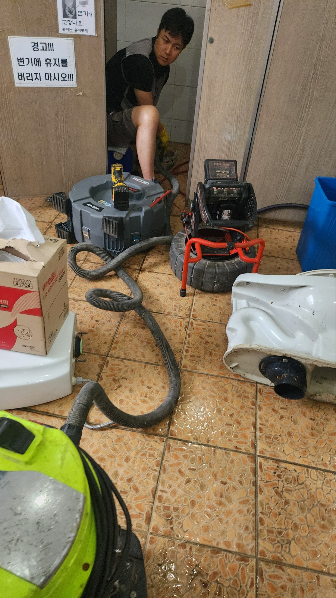
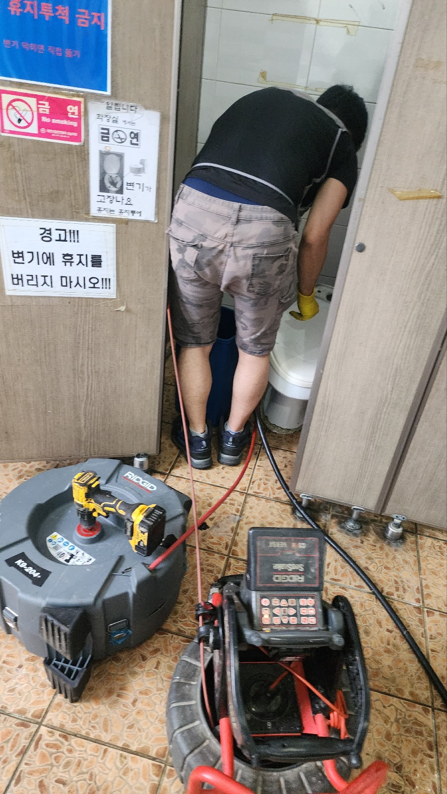
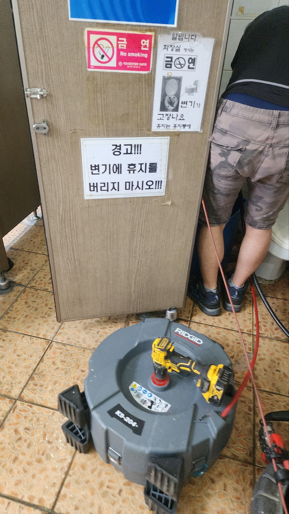

🏠 용인 신봉동 변기배관역류 고기동 오수관막힘 뚫음 설비공사
용인 신봉동 싱크대막힘 전문 시공 후기

📋 작업 개요
- 위치: 용인 신봉동, 신봉동, 용인
- 서비스 유형: 싱크대막힘, 변기막힘, 하수구막힘, 배관막힘, 맨홀막힘, 누수수리, 역류해결, 뚫는업체, 배관청소, 설비공사, 악취차단
- 작업 일시: 2025. 7. 2. 10:01
- 업체명: 하수구수사대 (010-5615-2118)
🔍 문제 상황
안녕하세요.
설비전문업체 " 하수구수사대" 입니다.
용인 신봉동 변기배관역류 고기동 오수관막힘 뚫음 설비공사
물에 완벽히 녹아내리지 않는 고체 찌꺼기가 들어올 경우 배관 내부는 화장실막힘 베란다막힘 무엇이든 오염물로 잔뜩 찰 수 있답니다.
특히 슬러지가 점성으로 엉기게 되면 좀 더 강한 덩어리가 만들어집니다.
웬만하면 단면이 문제 없이 생길 수 있게 자주 내부 오염물 관리를 해주고 배수구 클리너 청소 또한 깨끗하게 유지해야합니다.
이번에 찾아간 장소는 하수구막힘 문제 때문에 서둘러 공사를 요청했던 현장이에요.
대개 발생하는 변기 막힘 증상이였습니다.
이러한 문제가 생긴 부위는 어디냐면 바로 메인 하수구였습니다.
여러 모양의 불순물이 쌓여서 하수가 제대로 빠져나가지 않았어요.
먼저 화장실같은경우 다양한 하수구 시설이 마련되어 있어 각각의 시설마다 하나씩 확인을 해야 하는 상황이었어요.
때때로 막힌 위치만 빠르게 정리하고 작업을 정리하는 곳도 있지만 화장실은 하수가 유입되는 장소가 많고 생성된 오수의 종류에 맞춰 각각 관거가 있기 때문에 종합적인 유지관리를 하고 구체적인 정비를 해주셔야 해요.
내시경 카메라를 활용해 조사를 해 본 결과 화장실막힘 원인은 머리카락을 비롯한 찌꺼기가 들어있었어요.

🔎 원인 분석
💡 전문가 진단: 정밀 진단 장비를 사용하여 슬러지의 고착 여부를 판명하고 타격/세척 작업을 실시했습니다.
짐작컨대 세면대를 쓰면서 투입된 머리카락과 여러가지 오염 물질이 같이 합쳐져서 문제를 발생시키게 된 상태로 보였습니다.
화장실에서 보통 쓰는 세정제 용품은 자체 점성이 있어 슬러지가 결합되면 쉽게 덩어리를 만듭니다!
시간이 흐름에 따라 석회질의 물질과 함께 뒤섞이면 단단한 덩어리가 형성될 수 있어요.
이와 같은 찌꺼기의 상태는 파이프를 더욱더 심각하게 막히게 하기 때문에 추후 배관 막힘이 생기게됩니다.
손님께서도 초반엔 배수가 순조롭게 진행되지 않아 힘들었지만 심한 이상으로 간주하지는 않았다고 하셨답니다.
하지만 슬러지가 지속적으로 쌓이게 되면서 철저하게 단면을 막아버려 더러운 물이 거꾸로 흐르는 현상이 생겼다고 해요.
뿐만 아니라 고약한 냄새도 극심하게 발생했다고 말씀하셨는데 배관 속에 형성된 물질이 부패하게 된 것 같더라고요.
위생적인 부분에도 이상이 있지만 건강에도 나쁜 영향을 미칠 수 있어 되도록 배수관 관리는 서둘러 해결해야하고 문제가 반복된다면 전문업체에 도움을 받는게 바람직해요.
배관 안에 만들어진 찌꺼기 관리 작업을 위해서 일단 석션기를 이용하여 청소를 했습니다.
단면을 면밀히 확인해보면 더러운 물질이 통로를 한가득 메우고 있어 신규 장비가 들어갈 수 있는 공간 자체가 존재하지 않았는데요.
석션을 사용하여 가능한 많은 면적의 폐기물을 수거 후 단면을 확보하며 철저하게 슬러지를 제거했습니다.
하수구 안쪽에 쌓인 오염물질은 그 형태가 상당히 여러 가지인만큼 장비 또한 배관의 모양에 맞게 적용이 되어야 해요.
스프링 시설 등을 이용해서 관로의 정체되어 있는 외부 물질을 조금씩 청소해 드렸어요.

🔧 작업 과정
무엇보다 배수관의 단면이 바뀌는 지점에서 이물질의 누적 현상이 심각하게 드러나고 있었어요.
이 지점은 더러운 물이 배출되더라도 유속이 순조롭게 만들어지지 않는 부위로 끈적끈적한 물질이 차츰차츰 누적될 수 있는 곳이기도 했어요.
일단 스프링 기구 등을 사용해서 배관의 단면을 차단하는 불순물들을 깔끔하게 제거하고 적당한 유속이 구성될 수 있도록 정비해드렸어요.
예측보다 관리해야 할 부위가 더 많아서 조금 더 꼼꼼하게 정비가 진행되었어요.
마침내 스케일링 작업 진행 중에 배관에 견고함을 훼손할 수 있는 염려가 있어 내시경 카메라 도구를 사용하여 정비를 마무리해드렸어요.
카메라 장비는 누적된 오염물질의 상당 부분을 검사할 수 있어 무척 효과적으로 하수구막힘 처리할 수 있어요.
배수관에 대한 안전성은 공사자가 필수적으로 돌봐야 하는 부분인 만큼 숙련된 업체가 한층 더 쉽게 시공할 수 있을 거예요.
알고 계시는 것보다 오염물질을 처리하는 과정에서 하수도관 자체가 손상되는 경우가 제법 많거든요.
이와 같은 문제는 추후에 누수를 유발하고 빠져나온 하수는 근처 토사 또는 시설물을 손상시키기 때문에 심각한 문제가 될 수 있어요.
저희 업체의 경우 공사 중에도 무조건 내시경 장비를 활용하고 있으며 업무가 끝나면 즉시 결과물을 카메라 장비로 설명을 드려요.
이렇게 진행하니 좀 더 이물질 제거에 있어 신뢰도가 높습니다.
하수관 막힘에 수거된 오염물만 꽤 많은 부피가 제거되었습니다.
보통 저희가 쓰는 하수구 시설은 여러가지 형식의 불순물이 흘러들어오는 장소라고 여겨야 해요.
이때 만들어진 끈적임이 함께 뭉치면서 막힘 증상을 발생시킬 수 있어요.
고형물은 쉽게 부패되기도 하고 때로는 관로의 약한 위치에 문제를 일으키기 때문에 반드시 전문가에게 정비받을 수 있게 미리미리 해결해야합니다.
배관속에 형성되어 있는 슬러지의 상당한 양을 제거해 단면을 깨끗하게 보존하고 적당한 유속이 구성될 수 있게 시설을 만들었습니다.
예상보다 수거한 찌꺼기 자체가 많다는 것은 확인 가능합니다.
카메라 장비를 활용해서 파이프 내부를 점검해보면 일반적으로 사용하고있는 관로의 직경이 상당히 좁다는 걸 알게될겁니다.
그래서 쓰는 사람이 적절한 관리를 해야만 단면을 말끔히 유지하고 적절한 유속이 만들어질 수 있게 하수구를 사용할 수 있어요.
스케일링 작업으로 관리된 내부 컨디션은 확인되는 바와 같이 청결하게 정비된다는 사실을 확인 가능합니다.
단면이 완벽히 보여지면서 최초 관로를 구상할 때 계획한 통수량도 지속할 수 있습니다.


✅ 작업 완료
모든 작업은 사전에 고객님에게 꼼꼼하게 안내를 드리며 수리를 진행한 후 작업 결과물에 대해서도 빠짐없이 알려드려서 문제가 있는 부분을 세심하게 관리하도록 직접 설명드렸습니다.
사용자가 시설에 대한 장단점을 정확히 인지한다면 화장실막힘 베란다막힘 어떤 것이든 관거의 내구성을 지속하면서 구조물의 사용 기간도 오랜시간 유지할 수 있습니다.
하수구수사대 010 2340 2118
경기도 용인시 수지구 풍덕천로129번길 9 5층 590호
#신봉동하수구막힘 #신봉동싱크대막힘 #신봉동싱크대역류 #신봉동배수관막힘 #신봉동배관뚫는곳 #신봉동설비 #신봉동맨홀막힘 #신봉동하수구뚫는업체 #신봉동변기막힘
#고기동하수구막힘 #고기동싱크대막힘 #고기동싱크대역류 #고기동하수구역류 #고기동화장실막힘 #고기동설비 #고기동하수구뚫는곳 #고기동하수구뚫는업체 #고기동변기막힘




⚠️ 베란다 누수 및 방수 관리 방법
- ✅ 비가 많이 올 때 창틀 주변이나 아래층 천장에 얼룩이 생기는지 정기적으로 확인해 보세요.
- ✅ 우수관 주변 실리콘 마감이 들뜨거나 깨진 틈새가 있는지 손상 여부를 수시로 체크하세요.
- ✅ 베란다 바닥 타일의 줄눈(메지)이 소실되면 그 틈으로 물이 침투하여 누수가 유발됩니다.
- ✅ 누수 의심 증상 발견 시 방치하면 아래층 손실이 커지므로 즉시 전문가의 진단을 받으십시오.
💡 핵심 정리
- 확실한 장비 작업(내시경 점검 및 샤프트 스케일링)으로 원인을 뿌리 뽑습니다.
- 작업 후 1년 이내에 동일한 부위 재발 시 100% 무상 A/S 서비스를 보장합니다.
- 서울 · 경기 · 인천 전 지역에 24시간 언제든 긴급 출동할 수 있도록 항시 대기 중입니다.
❓ 자주 묻는 질문 (FAQ)
🚨 용인 신봉동 싱크대막힘 문제로 고민이신가요?
정확한 원인 진단과 확실한 시공으로 재발 없는 해결을 약속드립니다.
24시간 긴급 출동 | 서울 · 경기 · 인천 전지역 | 1년 내 재발 시 무상 A/S